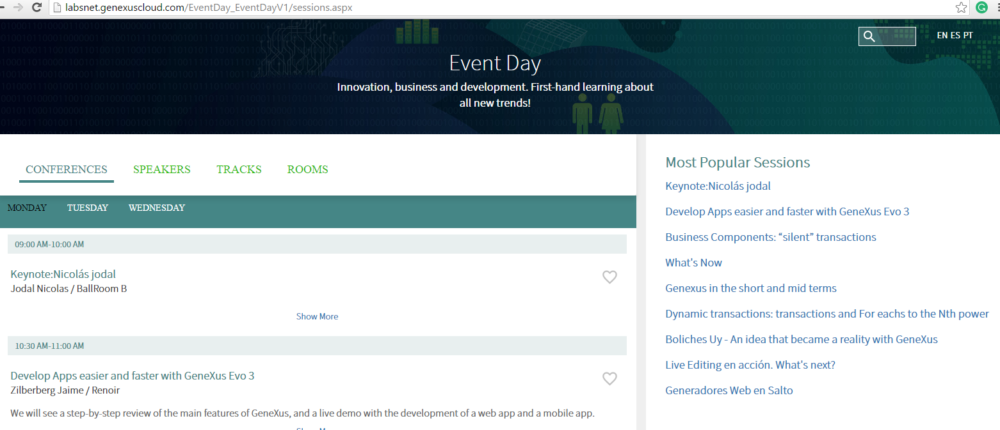
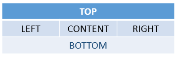
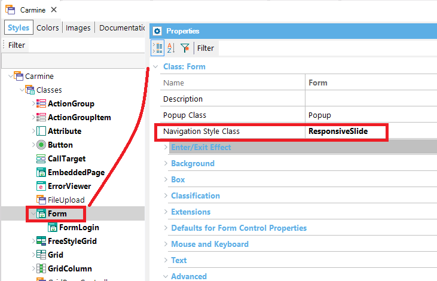
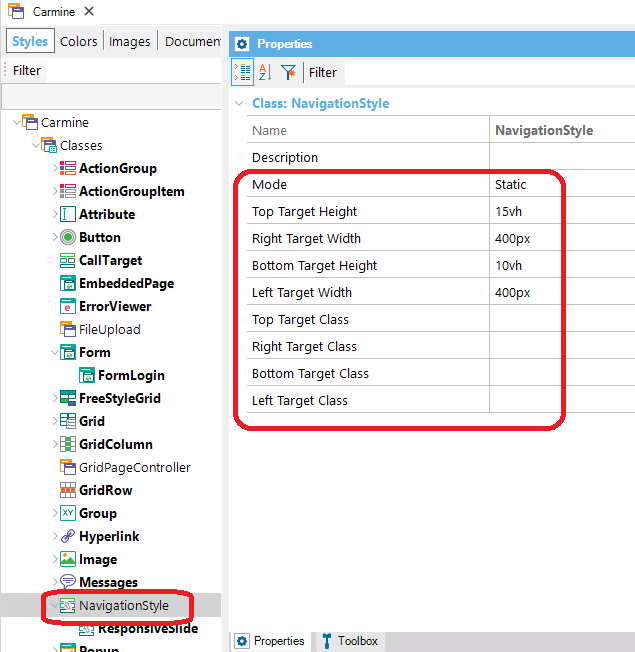
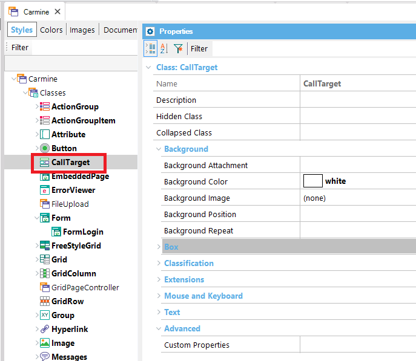
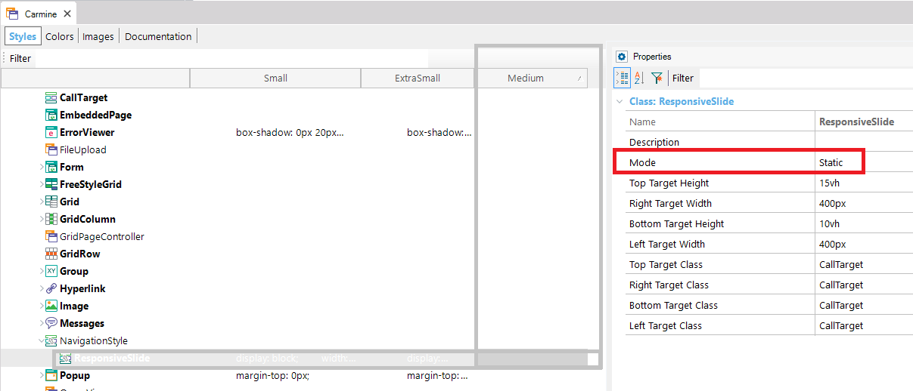
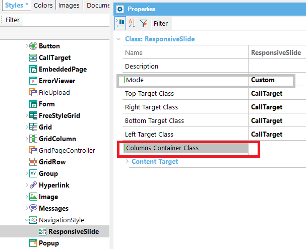
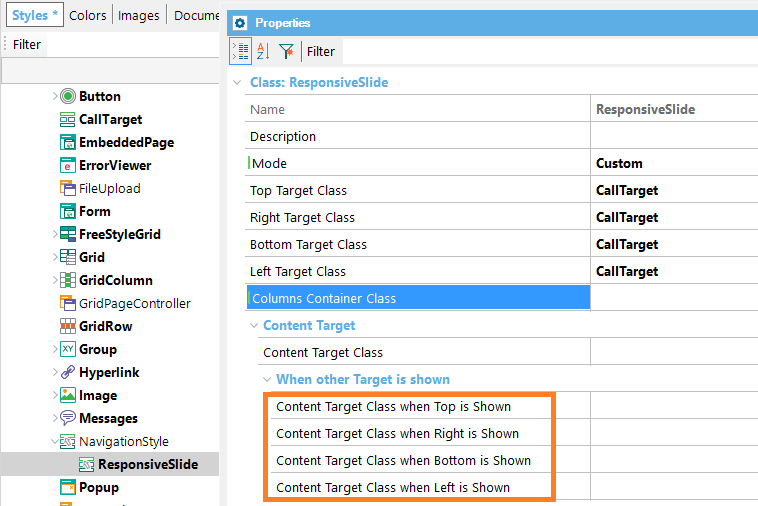
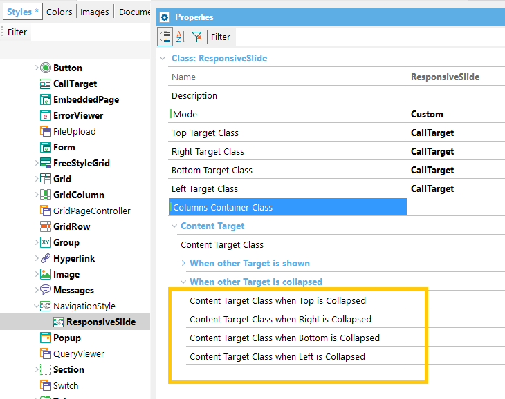

There are cases where we want a web object loaded on the page, in an area different from the area where the calling object is located.
It's very useful for Responsive Web Design applications, where a menu is shown with a slide gesture in the case of extra-small devices, and in a fixed and static position (on the top, left, right, or bottom of the screen), for large-screen devices.
Take a look at the following images, where the menu appears (and hides) using a slide effect from the right in the case of extra-small screen devices.
For large screens, it is shown static at the right target of the screen.

Next, we explain how to achieve this behavior.
The CallOptions Target property allows the specification of the page area where the object will be created when invoked.
(1)<Object Name>.CallOptions.Target = TargetName
(2)<Object Name>()
<Object Name> is the object to be invoked.
Note that first you specify the Target where the object will be drawn (Content, Top, Right, Bottom or Left). When no Target is specified, or when the Target specified is "Content", the navigation to the object is done in the traditional manner.
Then (2), you "call" the object. This call doesn't show the object. The object will be created in the area corresponding to the Target. It will be viewed only when the area is visible.
Important Note
The status of the Top, Right, Bottom and Left targets are "Hidden", and they will remain like that until they are explicitly shown by the programmer using any method of the Navigation external object. Alternatively, the target can be shown regarding the configuration of the Theme (we'll go on this topic below).
The ShowTarget and ExpandTarget are methods of the Navigation External Object, that allow indicating that the Target should be shown or expanded.
Navigation.ShowTarget(TargetName)
Navigation.ExpandTarget(TargetName)
Notes:
- The existence of a master page defined in the calling object is a requirement for specifying an object’s Target.
- The object loaded on the Top, Right, Bottom and Left targets have to be web components with URL access property = YES.
- The object loaded on the Top, Right, Bottom and Left targets will not be drawn again when navigating to another object, if the calling object and the object called share the same master page. When navigating to another object, the Targets shift to the "Hidden" status (and the Theme configuration will determine if they continue to be visible or not). We'll explain this in more detail below.
As opposed to SD, web generators do not have navigation styles defined in advance by the platform (Slide Navigation and Split Navigation). Therefore, for the web case, we indicate that there will always be 5 possible targets, while the programmer may define his own style, showing the targets most convenient for each case, and setting up customized aesthetics:
- Top
- Right
- Bottom
- Left
- Content (default). The area corresponding to the Content target is the master page plus the calling object.
For each target there will be an area reserved for the page’s master page:

Note: The areas corresponding to the Targets are not visible on the WebForm of the master page object in GeneXus.
By default, the areas corresponding to the Top, Right, Bottom and Left Targets are hidden and shown on Extra Small Screens (with a Slide effect). In other screen sizes they are fixed (whenever they have an object loaded). This may be totally modified from the Theme.
To allow this, the classes of the Form type have the Navigation Style Class property, which enables the selection of a new class of the NavigationStyle type.

The Classes of the NavigationStyle type have the following properties..

| Mode |
Admits three value:
- Static. Sets fixed targets.
- Slide. Leaves targets hidden, and when they appear they move the Content Target.
- Custom. Allows the full customization of the way in which targets are shown and it is meant for advanced users.
|
| Top Target Height |
Only visible when Mode <> Custom, it allows you to determine the height of Top Target. |
| Right Target Width |
Only visible when Mode <> Custom, it allows you to determine the width of Right Target. |
| Bottom Target Height |
Only visible when Mode <> Custom, it allows you to determine the height of Bottom Target. |
| Left Target Width |
Only visible when Mode <> Custom, it allows you to determine the width of Left Target. |
| Top Target Class |
Allows the selection of a class of the CallTarget type where the appearance of the Top Target may be specified.

|
| Right Target Class |
Allows the selection of a class of the CallTarget type where the appearance of the Right Target may be specified. |
| Bottom Target Class |
Allows the selection of a class of the CallTarget type where the appearance of the Bottom Target may be specified. |
| Left Target Class |
Allows the selection of a class of the CallTarget type where the appearance of the Left Target may be specified. |
(*)To sum up
- If the Mode = Static, the component will be shown without the need of showing it programmatically
- If the Mode= Slide, you have to program an action to show (or expand) the menu.
Generally, you set the Mode = Static for large screens, and Mode = Slide for small screens. You need a control to trigger the show (expand) action when Mode = Slide.
The menu is hidden (and collapsed) with a slide gesture (or a click in desktops).
Consider the example of the captures above.
We have a master page where we want to show a menu (it's a web component called "ShowMostPopularSessions") at the right hand. This menu will be shown static for medium and large screens but it will appear with a slide effect in the case of extra small and small screens.
Firstly, in the Start Event we specify the CallOptions Target of the menu, and then, call the object.
Event Start
ShowMostPopularSessions.CallOptions.Target = "Right"
ShowMostPopularSessions()
EndEvent
- For medium and large screens we do not to program anything because the ResponsiveSlide class is set to Mode= Static for Medium and wider screens (conditional rules are configured in the Theme for that purpose).

- On the contrary, for extra small and small screens, the Mode property is set to Slide. So, as we haven't programmed the ShowTarget or ExpandTarget yet, the menu isn't drawn. We have to add a button ("Favorites") to show the menu.
Event Favorites.Click
Navigation.ShowTarget("Right")
EndEvent
Note that the "Favorites" control should be displayed only for extra small screens. This can be done configuring a conditional rule for the class associated with the control, where you should set the following for Medium and wider screens: display:none;.
Properties viewed when Mode=Custom.
| Property |
Description |
| Columns Container Class |
Allows the selection of a class of the Section type, where the appearance of the container of the Left, Content, and Right targets may be specified.

|
| Content Target |
| Content Target Class |
Allows the selection of a class of the CallTarget type where the appearance of the Content Target Content may be specified. |
| Content Target > When other Targets are shown |
| Content Target Class when Top is shown |
Allows specification of the class of the CallTarget type that will be applied to the Content Target when the Top Target is shown.

|
| Content Target Class when Right is shown |
Allows specification of the class of the CallTarget type that will be applied to the Content Target when the Right Target is shown. |
| Content Target Class when Bottom is shown |
Allows specification of the class of the CallTarget type that will be applied to the Content Target when the Bottom Target is shown. |
| Content Target Class when Left is shown |
Allows specification of the class of the CallTarget type that will be applied to the Content Target when the Left Target is shown. |
| Content Target > When another Target is collapsed |
| Content Target Class when Top is collapsed |
Allows specification of the class of the CallTarget type that will be applied to the Content Target when Top Target is shown collapsed.

|
| Content Target Class when Right is collapsed |
Allows specification of the class of the CallTarget type that will be applied to the Content Target when Right Target is shown collapsed. |
| Content Target Class when Bottom is collapsed |
Allows specification of the class of the CallTarget type that will be applied to the Content Target when the Bottom Target is shown collapsed. |
In addition to the basic properties of a theme class, classes of the CallTarget type also have the following properties..
| Hidden Class |
Allows the selection of another class of the CallTarget type, where the appearance of the Target, when hidden, may be specified. |
| Collapsed Class |
Allows the selection of another class of the CallTarget type, where the appearance of the Target, when collapsed, may be specified. |
This feature is available when Web User Experience property = Smooth.
|